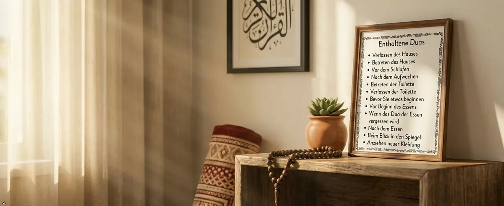

Wenzenbach · Regensburg region, Germany
Products for your home. Service for businesses.
J&F Originals is a small family business from Wenzenbach near Regensburg. We offer dua stickers and other products for your home, hand-crocheted baby clothing – and, as a vending operator, service zones for commercial premises.

What we offer
Choose your area
 For your homeShopDua stickers, party napkins and soon a Himalayan salt grinder – available on Amazon.To the shop →
For your homeShopDua stickers, party napkins and soon a Himalayan salt grinder – available on Amazon.To the shop →
 Made by handHandmadeHand-crocheted merino wool baby clothing – one of a kind, made to order. Available on Etsy.To the crochet products →
Made by handHandmadeHand-crocheted merino wool baby clothing – one of a kind, made to order. Available on Etsy.To the crochet products →

About us
A small family business from Wenzenbach
J&F Originals is run by Jehan Khan Afridi. Under one name, we offer products for your home, hand-crocheted baby clothing and service zones for commercial premises in the Regensburg region.